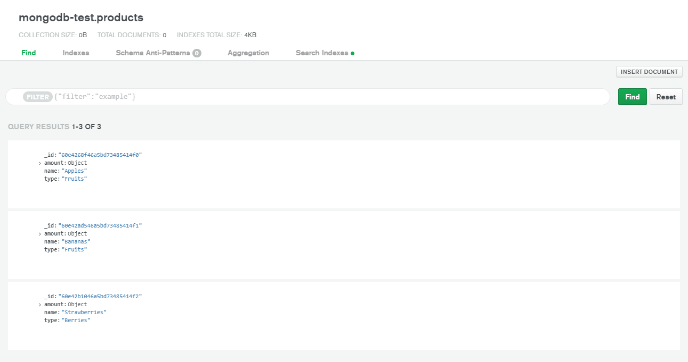

Лабораторные работы 1 и 2
Результатом выполнения лабораторных работ №1 и №2 является данный сайт
Лабораторные работы 9 и 10
Отчёт о выполнении лабораторных работ 9-10
POST запрос с помощью telnet

Ответ на POST запрос с помощью telnet

GET запрос с помощью telnet

Ответ на GET запрос с помощью telnet

POST запрос с помощью curl

Ответ на POST запрос с помощью curl

GET запрос с помощью curl

Ответ на GET запрос с помощью curl

Инвариантные самостоятельные работы
Тема 1. Транспиляция и сборка проекта с использованием директив импорта и экспорта в код с модульностью CommonJS
- Создание проекта
yarn init -y
- Добавление зависимостей
yarn add -D babel-cli babel-preset-env
- Настройка Babel (файл .babelrc)
- Добавление библиотеки moment
yarn add moment
- Команда транспиляции
babel-node ./src/index.js
- Сборка проекта
babel ./src -d ./lib
Файлы main.js и name.js находятся в отношении нативной модульности.
Исходные файлы расположены в директории src, транспилированные - в директории lib.
Тема 2. Отправка HTTP-запроса серверу методом GET и POST с помощью приложения cURL с записью скринкаста совершаемых действий
Скринкаст
Тема 3. Проектирование веб-базы данных и разработка приложения на основе фреймворка Express с реализацией маршрутизации и операций CRUD над простой БД с обработкой запросов REST
Для разработки базы данных на MongoDB можно использовать MongoDB Cloud.
MongoDB не требует определения схемы документа, что позволяет вносить изменения в структуру документа при добавлении или редактировании данных.
Схема может иметь следующий вид:
{
name: String,
type: String,
amount: {
number: Number,
unit: String
}
}

Реализован REST API для выполнения операций CRUD в базе данных MongoDB.
Приложение реализовано с использованием Express, bodyParser, Mongoose.
Реализованы следующие операции:
GET /products - получение списка продуктов
POST /products/new - добавление нового продукта
POST /products/update/:id - обновление информации о продукте по ID
POST /products/delete/:id - удаление информации о продукте по ID
При отправке запросов для добавления и обновления продукта информация о нём передаётся в теле POST-запроса.
Сервер возвращает ответ - статус выполнения операции в формате JSON. Пример ответа сервера (добавление данных):
{
"status": "success"
}
Пример ответа сервера на GET-запрос:
[
{
"amount": {
"number": 32,
"unit": "kg"
},
"_id": "60e4268f46a5bd73485414f0",
"name": "Apples",
"type": "Fruits"
},
{
"amount": {
"number": 16.25,
"unit": "kg"
},
"_id": "60e42ad546a5bd73485414f1",
"name": "Bananas",
"type": "Fruits"
},
{
"amount": {
"number": 24.5,
"unit": "kg"
},
"_id": "60e42b1046a5bd73485414f2",
"name": "Strawberries",
"type": "Berries"
}
]
Вариативные самостоятельные работы
Тема 1. Сборка проекта с помощью бандлера Webpack
- Добавление webpack и webpack-cli
yarn add -D webpack webpack-cli
- Добавление библиотеки moment
yarn add moment
- Сборка проекта
yarn webpack . -o ./bundle.js

Тема 2. Разработка серверной компоненты приложения удалённого доступа к базам данных и экспериментальная проверка корректности её работы
Серверная компонента приложения может представлять собой реализацию REST API для выполнения операций CRUD в базе данных MongoDB.
Приложение реализовано с использованием Express, bodyParser, Mongoose.
Реализованы следующие операции:
GET /products - получение списка продуктов
POST /products/new - добавление нового продукта
POST /products/update/:id - обновление информации о продукте по ID
POST /products/delete/:id - удаление информации о продукте по ID
При отправке запросов для добавления и обновления продукта информация о нём передаётся в теле POST-запроса.
Сервер возвращает ответ - статус выполнения операции в формате JSON.
Проверка работы
Добавление данных:
curl -X 'POST' -d 'name=NewProduct' https://task2.danilaisaichev.repl.co/products/new
<Ответ сервера при добавлении данных:/p>
{
"status": "success"
}
Получение данных:
curl https://task2.danilaisaichev.repl.co/products
Ответ сервера:
[
{
"amount": {
"number": 32,
"unit": "kg"
},
"_id": "60e4268f46a5bd73485414f0",
"name": "Apples",
"type": "Fruits"
},
{
"amount": {
"number": 16.25,
"unit": "kg"
},
"_id": "60e42ad546a5bd73485414f1",
"name": "Bananas",
"type": "Fruits"
},
{
"amount": {
"number": 24.5,
"unit": "kg"
},
"_id": "60e42b1046a5bd73485414f2",
"name": "Strawberries",
"type": "Berries"
}
]
Тема 3. Подготовка материалов для выступления по NoSQL-решениям
NoSQL — обозначение широкого класса разнородных систем управления базами данных, существенно отличающихся от традиционных реляционных СУБД с доступом к данным средствами языка SQL.
Традиционные СУБД ориентируются на требования ACID к транзакционной системе: атомарность, согласованность, изолированность, долговечность, тогда как в NoSQL вместо ACID может рассматриваться набор свойств BASE:
базовая доступность — каждый запрос гарантированно завершается (успешно или безуспешно).
гибкое состояние — состояние системы может изменяться со временем, даже без ввода новых данных, для достижения согласования данных.
согласованность в конечном счёте — данные могут быть некоторое время рассогласованы, но приходят к согласованию через некоторое время.
ключ-значение
семейство столбцов
документноориентированная СУБД
графовая СУБД
не используется SQL
являются неструктурированными (не требуют определения схемы документа)
представление данных в виде агрегатов
слабые свойства ACID
распределённые системы без совместно используемых ресурсов
MongoDB - документная БД с открытым исходным кодом
CouchDB - БД, которая использует JSON для документов, JavaScript для MapReduce запросов, и обычный HTTP для API
GemFire - распределенная платформа управления данными, обеспечивающая динамическую масштабируемость, высокую производительность и сохранность как у БД
Redis - сервер структур данных, где ключами могут быть строки, хеши, списки, наборы и сортированные наборы
Cassandra - БД, которая обеспечивает масштабируемость и высокую надежность без потери производительности
memcached - высокопроизводительная, распределенная в памяти и объектная система кеширования с открытым исходным кодом
Hazelcast - высоко масштабируемая распределенная платформа с открытым исходным кодом
HBase - распределенное и масштабируемое хранилище больших объемов данных
Mnesia - распределенная система управления базами данных
Neo4j - высокопроизводительная, enterprise-класса графовая БД с открытым исходным кодом
Тема 4. Развёртывание веб-ресурса на платформе vscale.io с использованием Docker
Для развёртывания веб-ресурса на платформе vscale.io необходимо создать аккаунт.
После создания аккаунта необходимо создать сервер с готовым образом Docker:

После создания сервера необходимо подключиться к нему по SSH с использования логина и пароля или SSH-ключа.
Веб-ресурсом может являться сайт на CMS Ghost.js, которую можно установить с помощью Docker-контейнера.
Для установки контейнера необходимо выполнить команду:
docker pull ghost
Для запуска Ghost необходимо выполнить команду:
docker run -d --name some-ghost -e url=http://localhost:3001 -p 3001:2368 ghost
После этого Ghost будет доступен по адресу server_ip:3001.

Панель администратора доступна по адресу server_ip:3001/ghost.